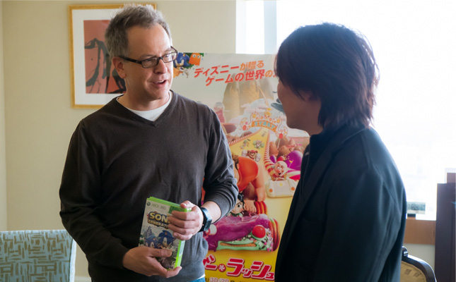

ソニックシリーズのクリエーターズレポートを紹介！
2013.03.15

飯塚（以下I）：本日はお会いできて光栄です。色々な取材でスケジュールが厳しい中、お時間を頂きありがとうございます。早速ですが、このインタビューは「ソニックチャンネル」というウェブサイトに掲載しますので、よろしくお願いします。
リッチ・ムーア監督（以下R）：そうですか。
I：ですので、この記事を読む人たちの多くは、ソニックファンということになります。
R：それは凄い！ソニックといえば昨年のサンディエゴでのコミコン（※1）にあわせて開催されたソニックのパーティに行ったんだけど…
I：ああ、ソニックファンを招待したイベント「SonicBoom」ですね。
R：そう。あのパーティにはいたの？
I：もちろんいましたよ。
R：あのパーティはすごかった！みんな大興奮だった。みんなソニックを超好きなんだね！
I：ソニックのファンはあなたに会えて興奮してたんですよ。
R：そうかなあ（笑）？
I：そのコミコンのパーティで、ソニックが映画に出ることを監督ご自身から発表してもらいましたがその時の反響やお気持ちはどうでしたか？
R：まず最初にあのパーティはハチャメチャだった（笑）。大勢のソニックファンたちが、まるでコミコンの会場にいる人たちみたいにソニックの頭をかたどった帽子を被っていて…（笑）。ソニックファンの盛り上がり方はとにかくエキサイティングで、僕も本当に興奮したよ。パーティがどんな感じなのか知らずに行ったので、スピーチ用のメモを準備していったんだけど…いや本当につまらない内容のスピーチで…「本日ここに来られて喜んでおります」みたいな感じの退屈なものだったから、「こんなスピーチはできない、ここはそんなパーティじゃない！こんな話は向かない。何か面白いこと言わないと」と思い、それで歩きながらその場でコメントを考えたんだ。コミコンの開催期間の中でもひときわ楽しい瞬間だったよ。新しいレーシングゲーム（※2）が発表されたときの盛り上がりなどは、その瞬間にあの場にいて自分がイベントの一部としてあったことを自慢に思ったし本当に光栄だった。
I：『シュガー・ラッシュ』はゲームが舞台のお話で、監督ご自身もたくさんゲームをされると思うのですが、監督の今のお気に入りのゲームは何ですか？
R：今のお気に入りかい？たくさんお気に入りはあるんだけど…その…（携帯電話を操作するマネをして）電話向けのコンテンツで…（笑）あまり言いたくないんだけど。
I：ああ、携帯電話のアプリですね。でも、ソニックも携帯電話でプレイできるんですよ。
R：えっ、ソニックも携帯電話でも遊べるの？
I：はい、プレイできます（笑）
R：それは良かった！早速今度やってみよう。今夢中になってプレイしているのは…日本でもサービスされているか分からないけど『TempleRun』や『WordsWithFriends』『ScrambleWithFriends』などかな。どれもよくあるゲーム性なんだけど、新しく作り直されていて、インターフェイスがすばらしいんだよ。いずれにしても映画が完成したのは10月で、その後はずっと旅続き。映画の宣伝で、あちこち旅して回っているから3月までは家でゆっくりゲームする時間は取れそうにないな。まずはソニックのゲームを携帯に入れるよ。今旅して回っているから、携帯だと逆に丁度良いからね。家に戻ったら、（最初にお渡しした『ソニックジェネレーションズ』を手に取り）これをやってみるよ（笑）。
I：このソフトは過去20年のソニックの全てが体験できるんですよ。
R：えっ、本当かい?それはいいね！
I：ぜひプレイしてみてください。それでは映画の質問に戻します。最初『シュガー・ラッシュ』のお話を伺った時には、エッグマンだけ登場させたいということでしたが、途中からソニックも追加でリクエストされましたよね？それは何故ですか？
R：制作の当初から、映画の冒頭部分は悪役たちの場面から始まることにしていました。ボスキャラや悪役キャラクターをその場面に出したかったから、エッグマンがそこにいるということはかなり初めの時点で決まっていたんだ。そこからストーリー設定をさらに広げようと考えていた時に、「このビデオゲームの世界では、キャラクターが自分の本来のゲーム以外で死んでしまった場合は二度と生き返ることができない」というルールを強調しなくてはならないことがはっきりしてきたんだ。映画内の重要なルールとなるので、ゲーム・セントラル・ステーションの大スクリーンで、ちょうど公共広告みたいな感じで、とても有名で象徴的なキャラクターにこのルールをしゃべらせる必要があると思った。それでソニックがしゃべるのはどうだろう？と考えたんだ。声など色々な要素を考えると、ソニックは適役だった。ソニックをどこかに出したいと考えているところでもあったから、まさにピッタリだったんだ。それでセガに、そう、あなたたち（笑）にお願いしたんだよね。
セガとの作業で良かったのは、セガが僕たちのやろうとしていることをよく理解してくれたということだ。自分たちのキャラクターの価値を理解しながらも、寛大にキャラクターを分かち合ってくれた。素晴らしかったよ。映画でソニックを見た人は「あっ、ソニックが出てる！」って話題にしてくれる。ソニックぐらい有名で象徴的なキャラクターを出せたことにとても感謝しているよ。ありがとう。
I：こちらこそ光栄です。今回映画に出して頂く作業の中で一番驚いたのは、最初ソニックは一カ所だけ使用するはずだったのに、結構上映直前まで追加があったことです。映画の制作スケジュールはそれほどフレキシブルなのでしょうか？
R：そうだね、けっこうそれが普通だよ。直前まで一種のキャスティングというか、キャラクターを発展させていく作業を行ったんだ。映画の中でフェリックスが自分のゲームの30周年を祝う場面があって、ここに何体か有名なキャラクターを出したいと思った（笑）。それで「ソニックを入れられるかセガに聞いてみよう」ということになったんだ。そうしたらこのパーティの場面で誰かに「ソニックはいつの間にゲーム・セントラル・ステーションから出て行ったんだ？さっきはゲーム・セントラル・ステーションにいたはずなのに、パーティにも来ているぞ！？」と言われたんだよ。だから僕は「ソニックは走るのが速いんだよ！だからあんなに速く、あそこに着いたんだ」と答えたのさ（笑）。
I：ソニックがリングを落とすシーンがありましたよね？個人的にはあの場面がとても好きでした（笑）
R：ああ、ゲーム・セントラル・ステーションでリングを落とすところだね。あの場面はゲームそのもののように完璧な出来になるようにしたかったんだ。落としたリングがチカチカするとかね。見た人が「すごい！ソニックのゲームと同じだ！」って思うような、いつもそんな瞬間を求めているんだ。ゲームのキャラクターとして本物らしくなるし、かっこいいからね。
I：もし映画に続編があるとしたら、ソニック以外に使ってみたいセガのキャラクターはいますか？
R：以前『バーチャファイター』にハマっていたので、あのキャラクターを続編に出せたらいいな。できればセガさんお願いします！（笑）
I：『バーチャファイター』は、アーケードゲームが舞台のこの映画にピッタリでしょうね。
R：凄くフィットすると思うよ。それと僕はドリームキャストが大好きなんだ。あのゲーム機本体やコントローラーがね。その中でも『バーチャファイター』のキャラクターは特にお気に入りだね。それから続編があるとしたら、もっとソニックも出したいね。ストーリーの中でソニックの役割をもっと大きいものにしたいよ。有名なキャラクターたちには、単なるカメオではなくストーリー中でもっと時間を割きたかった。ソニックは映画でもっと…
I：『ソニック・ザ・ムービー』？
R：そうそう、『ソニック・ザ・ムービー』いいね！（笑）
I：最後にソニックファン、セガファンに一言お願いします。
R：まずみなさんに知ってもらいたいのは、皆さんが暖かく心からこの映画を受け入れて下さったことを僕がどんなにありがたく感じているかということですね。そして、これはまだ始まりに過ぎません。世界に向けて発信したい、すばらしいアイデアやストーリーがまだまだあるんです。これからも飯塚さんのような人たちと一緒に働くことで、ソニックやその他すばらしいキャラクターを映画に登場させて、またファンの皆さんとすばらしい映画を共有したいと思います。
I：今日はお忙しい中、お時間いただき、ありがとうございました。
R：どういたしまして。会えて本当に嬉しかったよ。あなたの作品は大好きでね。ソニックのアイデアはどうやってできたの？最初のアイデアはどこから始まったの？
I：それには長い話があるんですよ（笑）
R：長い話と長いプロセス…、それはそうだよね。それについてはぜひまた今度ゆっくり聞かせてください（笑）
【『シュガー・ラッシュ』とは】
ゲームの"裏側"を舞台に"本当のヒーロー"をめざす"悪役キャラ"ラルフの活躍を描く感動の冒険ファンタジー──
『トイ・ストーリー』のゲーム版とも言えるミラクルな設定に、誰もが一度は夢にみたゴージャスでカラフルなお菓子の世界と、多種多様の魅力的なキャラクターたち──ディズニーだからこそ可能にできた奇跡の映像世界が、スリリングでエモーショナルな物語を紡ぎ出す。
2013年3月23日（土）3D/2Dロードショー
セガプライズ公式サイト
『シュガー・ラッシュ ハイパージャンボぬいぐるみ』
※1 Comic-ConInternationalのこと。毎年アメリカ・カリフォルニア州サンディエゴで開催される、漫画を中心とした北米最大のカルチャーイベント。開催期間は4日間で世界各国から10万人を超える人たちが参加する。2012年は7月12日～15日で開催された。SonicBoomは7月13日に開催。
※2 2012年末に海外で発売されたレーシングゲーム『Sonic&SEGA All-Star Racing Transformed』のこと。
2013 ©Disney. Licensed characters used with permission. Zangief and M. Bison ©CAPCOM U.S.A., Inc., Sonic, Dr. Eggman and Neff ©SEGA, Clyde ©NAMCO BANDAI Games Inc., and Q*Bert ©Columbia Pictures Industries, Inc. All Rights Reserved.